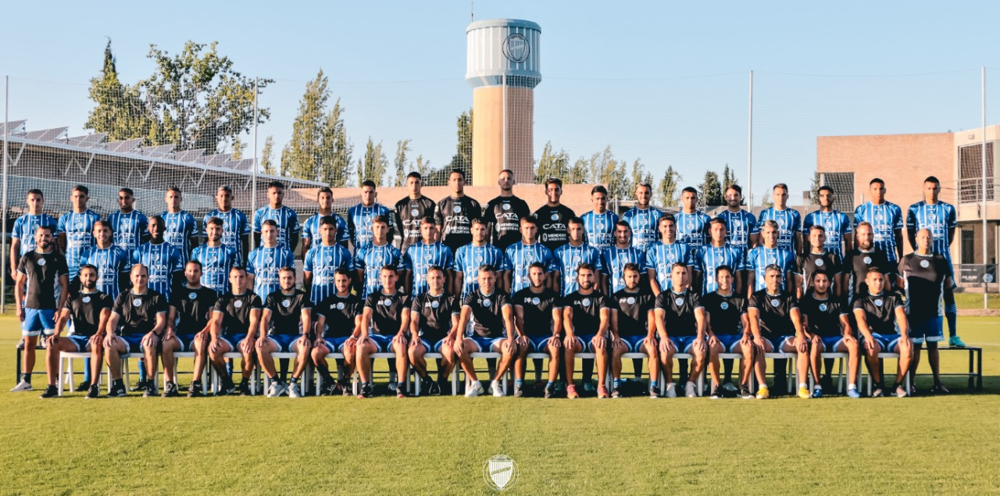

Godoy Cruz
Sobre el Equipo
El Club Deportivo Godoy Cruz Antonio Tomba es una institución polideportiva de Godoy Cruz, provincia de Mendoza, Argentina. Fue fundado el 1 de junio de 1921 con el nombre "Club Sportivo Godoy Cruz", aunque adoptó su actual nombre el 26 de septiembre de 1933, luego de fusionarse con el Club Bodega Antonio Tomba, entidad que fue fundada en 1899 por los obreros de la histórica bodega con el auspicio de Antonio Tomba.
Su estadio, el Feliciano Gambarte, se encuentra en Godoy Cruz. Cuenta con un aforo de 15.000 espectadores. Sin embargo, juega de local en Primera División en el Estadio Malvinas Argentinas de Mendoza.

Primer Equipo
